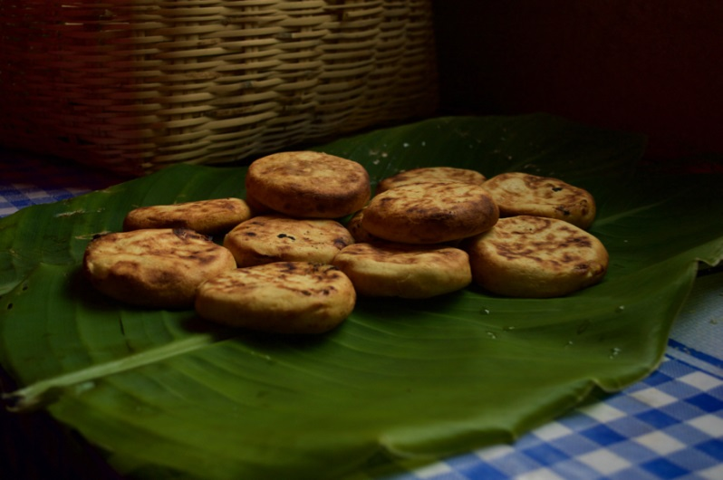
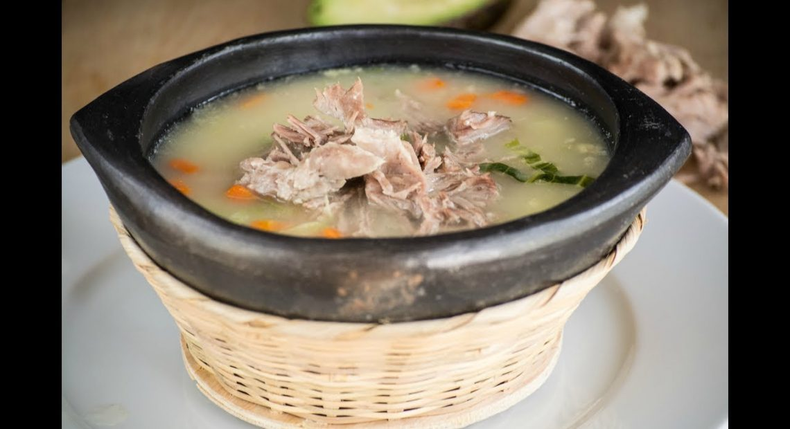
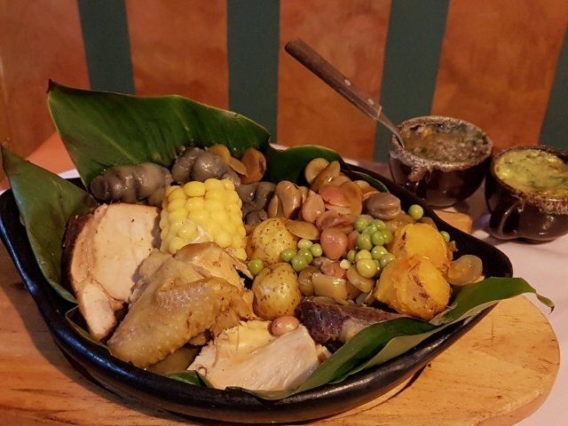
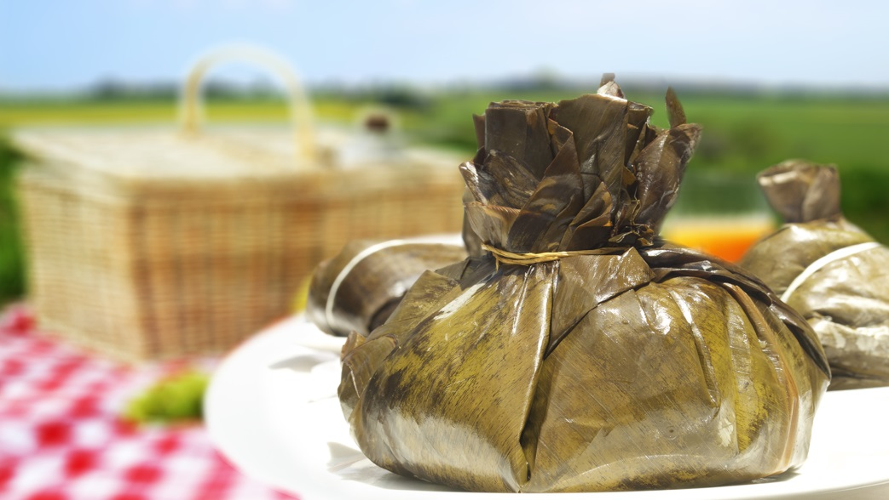
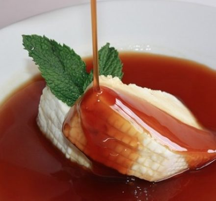

BitCook
Send your recipe
Delicious Boyacense Recipes
The best boyaca recipes

Arepas-Boyacenses
Total: Approximately 120 minutes.
Preparation: 60 minutes.
Cooking: 60 minutes.

Backbone-cuchuco
Total: Approximately 90 minutes.
Preparation: 30 minutes.
Cooking: 60 minutes.

Boyacense-stew
Total: Approximately 90 minutes.
Preparation: 30 minutes.
Cooking: 60 minutes.

Boyancese-tamal
Total: Approximately 76 minutes.
Preparation: 36 minutes.
Cooking: 40 minutes.

Curd-with-honey
Total: Approximately 60 minutes.
Preparation: 35 minutes.
Cooking: 25 minutes.
Fritanga
Total: Approximately 30 minutes.
Preparation: 10 minutes.
Cooking: 20 minutes.